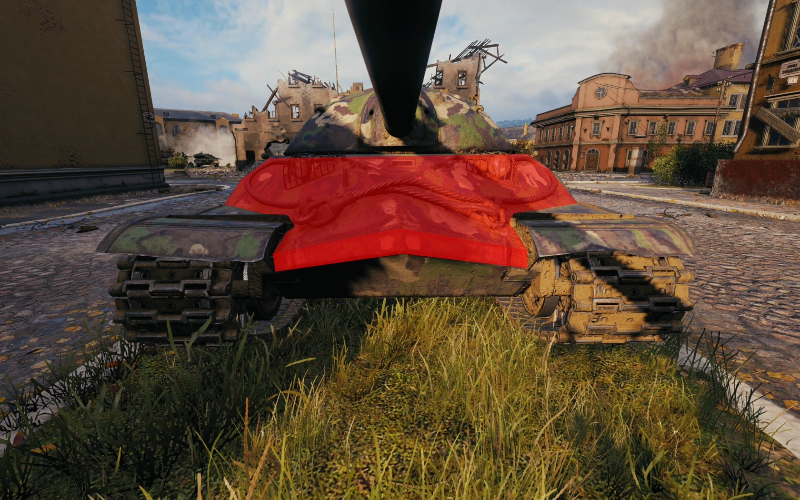
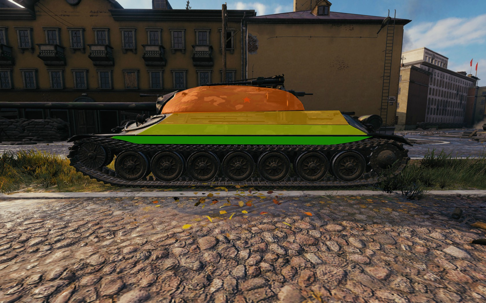
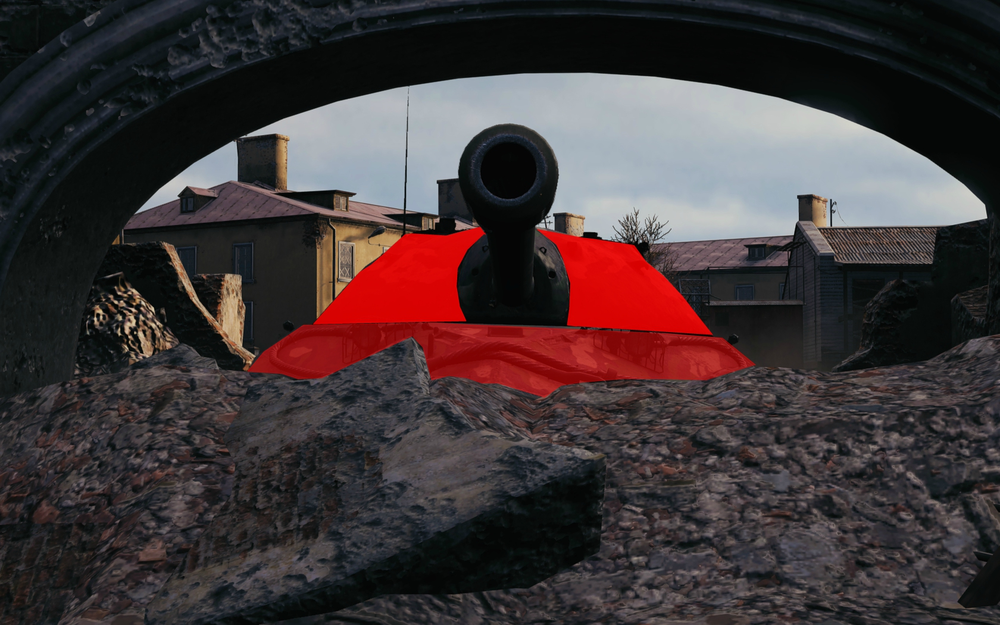
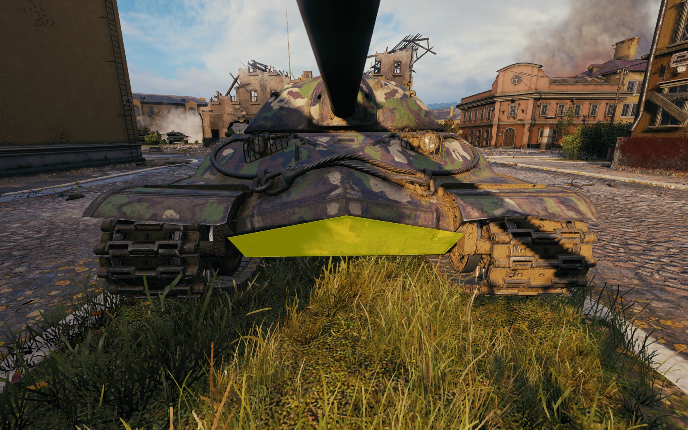

What's this about?
Hello, there! I'm Saif Taher, the developer of this application. I've built this application as a sort of 2D-model of our good old IS-7, You can click on the parts of the hull to view how much armou lies there, in addition to some tip nad tricks on how to angle these parts! Why don't you go ahead and try it out ?
NOTE: THIS IS NOT A FULL REVIEW OF THE TIER 10 SOVIET HEAVY TANK, IT'S ONLY A REVIEW OF ITS ARMOR PROFILE.
Click on the different parts of the IS-7 hull to learn more about it:

Upper Plate
Although it is only 150mm thick, the upper hull armor of the IS 7 is VERY strong. Why, you may ask? Well, it all lies in the power of ANGLING.
You see, the lower plate of the IS-7 is well-angled on both the horizontal and vertical axes.
This angling results in the effective armor of upper hull reaching from ~290mm all the way up to ~335mm on a level plane (aka. a tank in the same horizontal plane of the IS-7).
Not bad, not bad at all! In fact, this is one of the strongest, if not THE STRONGEST upper hull armors in the whole game:

However, this hull shape has a draw back. If you try to side scrape with this hull shape, the left/right part of the upper plate (depending on how you're coming around the corner) will lose a big chunk of its effective armor:
.jpg)
.jpg)
Instead what you should do is REAR-SIDESCRAPE, as shown:
This way, you won't expose vulnerabilities by sidescraping.
Side Armor
Similar to the frontal hull armor, but less impressive, the IS-7 has very good side armor, 100mm in its mid-to-lower part and 150mm on the top part, with some spaced armor as well, as shown below:
Nothing is over-matching that, which make the IS-7 a good side-scraper, but it's not totally fantastic though, it's very easy to over-angle while side-scraping in an IS-7 (I've seen many players do it).
In addition to the base 100mm of side armor, the upper part has 150mm. This upper part also has a bit of angling on the horizontal axis, which means that, if you're lucky enough, or alternatively of your enemy doesn't know about that top part, even THE SLIGHTEST angling will result in ricochet of that top part, as shown below:
.jpg)
Turret
What about the turret, then? Well, it's "good" news for the IS-7, the turret has 300mm of frontal armor, and it's very round, reaching ~500mm of armor at some parts. Further more, it has no weak-spots, commander hatches, machine gun ports, etc., whatsoever.
Due to this good old Russian turret, you can sit overhaul against virtually any tank except for and only for, tier 10 tank destroyers firing premium ammunition at point-blank range.
A perfect scenario for an IS-7 is to find an object to cover its lower plate and expose only its very strong turret and upper plate as shown:
Lower Plate
This fantastic armor on the turret, side, and upper hull of the IS-7 comes at a cost, though. You have a relatively week lower plate (It's still 150mm, but it’s angled on the vertical axis only). Without any angling, most tier 8's will have around 50% chance of penetration with standard rounds, tier 9's will have around 60%, and tier 10's will have around 70%, and if any of those tiers decide to tab their two keys, they will butter through it:
Summary
So to summarize, this is how you play the iS-7 (With regards to armor angling):
- You find a corner and REAR-SIDESCRAPE around it.
- You find a low spot and sit overhaul behind it.
- Try to angle your lower plate when someone is aiming at it (It will become relatively strong).
THIS IS THE CORRECT WAY TO PLAY THE IS-7. NOW GO OUT THERE, AND TRIGGER SOME SALTY UNICUM GOLD-SPAMMERS USING YOUR STRONG STALINIAN ARMOR!!!